Introduction to Data Visualization with Matplotlib
# Importing the course packagesimport pandas as pdimport numpy as npimport matplotlib.pyplot as plt# Importing the course datasets climate_change = pd.read_csv('datasets/climate_change.csv', parse_dates=["date"], index_col="date")medals = pd.read_csv('datasets/medals_by_country_2016.csv', index_col=0)summer_2016 = pd.read_csv('datasets/summer2016.csv')austin_weather = pd.read_csv("datasets/austin_weather.csv", index_col="DATE")weather = pd.read_csv("datasets/seattle_weather.csv", index_col="DATE")# Some pre-processing on the weather datasets, including adding a month columnseattle_weather = weather[weather["STATION"] =="USW00094290"] month = ["Jan", "Feb", "Mar", "Apr", "May", "Jun", "Jul", "Aug", "Sep", "Oct", "Nov", "Dec"] seattle_weather["MONTH"] = month austin_weather["MONTH"] = month
/var/folders/53/yp3kynfd7rn5y13c2wwfm33rmgtrfb/T/ipykernel_43537/780896728.py:16: SettingWithCopyWarning:
A value is trying to be set on a copy of a slice from a DataFrame.
Try using .loc[row_indexer,col_indexer] = value instead
See the caveats in the documentation: https://pandas.pydata.org/pandas-docs/stable/user_guide/indexing.html#returning-a-view-versus-a-copy
seattle_weather["MONTH"] = month
Explore Datasets
Use the DataFrames imported in the first cell to explore the data and practice your skills! - Using austin_weather and seattle_weather, create a Figure with an array of two Axes objects that share a y-axis range (MONTHS in this case). Plot Seattle’s and Austin’s MLY-TAVG-NORMAL (for average temperature) in the top Axes and plot their MLY-PRCP-NORMAL (for average precipitation) in the bottom axes. The cities should have different colors and the line style should be different between precipitation and temperature. Make sure to label your viz! - Using climate_change, create a twin Axes object with the shared x-axis as time. There should be two lines of different colors not sharing a y-axis: co2 and relative_temp. Only include dates from the 2000s and annotate the first date at which co2 exceeded 400. - Create a scatter plot from medals comparing the number of Gold medals vs the number of Silver medals with each point labeled with the country name. - Explore if the distribution of Age varies in different sports by creating histograms from summer_2016. - Try out the different Matplotlib styles available and save your visualizations as a PNG file.
Using the matplotlib.pyplot interface
There are many ways to use Matplotlib. In this course, we will focus on the pyplot interface, which provides the most flexibility in creating and customizing data visualizations.
Initially, we will use the pyplot interface to create two kinds of objects: Figure objects and Axes objects.
This course introduces a lot of new concepts, so if you ever need a quick refresher, download the Matplotlib Cheat Sheet and keep it handy!
Instructions
Import the matplotlib.pyplot API, using the conventional name plt. - Create Figure and Axes objects using the plt.subplots function. - Show the results, an empty set of axes, using the plt.show function.
# Import the matplotlib.pyplot submodule and name it pltimport matplotlib.pyplot as plt# Create a Figure and an Axes with plt.subplotsfig, ax = plt.subplots()# Call the show function to show the resultplt.show()
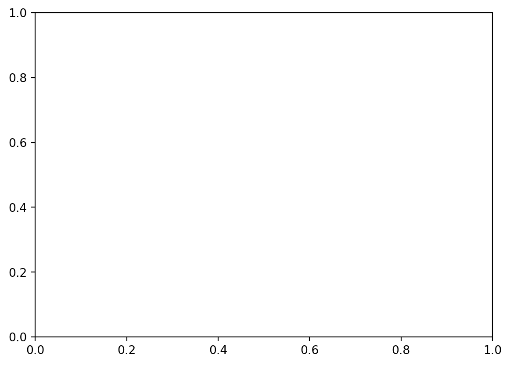
Adding data to an Axes object
Adding data to a figure is done by calling methods of the Axes object. In this exercise, we will use the plot method to add data about rainfall in two American cities: Seattle, WA and Austin, TX.
The data are stored in two pandas DataFrame objects that are already loaded into memory: seattle_weather stores information about the weather in Seattle, and austin_weather stores information about the weather in Austin. Each of the DataFrames has a “MONTH” column that stores the three-letter name of the months. Each also has a column named “MLY-PRCP-NORMAL” that stores the average rainfall in each month during a ten-year period.
In this exercise, you will create a visualization that will allow you to compare the rainfall in these two cities.
Instructions
Import the matplotlib.pyplot submodule as plt. - Create a Figure and an Axes object by calling plt.subplots. - Add data from the seattle_weather DataFrame by calling the Axes plot method. - Add data from the austin_weather DataFrame in a similar manner and call plt.show to show the results.
# Import the matplotlib.pyplot submodule and name it pltimport matplotlib.pyplot as plt# Create a Figure and an Axes with plt.subplotsfig, ax = plt.subplots()# Plot MLY-PRCP-NORMAL from seattle_weather against the MONTHax.plot(seattle_weather["MONTH"], seattle_weather["MLY-PRCP-NORMAL"])# Plot MLY-PRCP-NORMAL from austin_weather against MONTHax.plot(austin_weather['MONTH'], austin_weather['MLY-PRCP-NORMAL'])# Call the show functionplt.show()
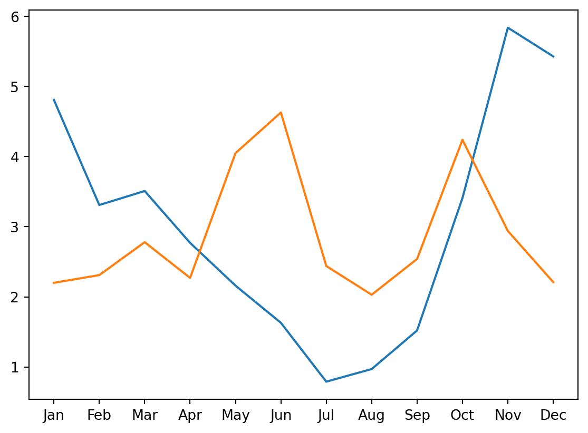
Customizing data appearance
We can customize the appearance of data in our plots, while adding the data to the plot, using key-word arguments to the plot command.
In this exercise, you will customize the appearance of the markers, the linestyle that is used, and the color of the lines and markers for your data.
As before, the data is already provided in pandas DataFrame objects loaded into memory: seattle_weather and austin_weather. These each have a “MONTHS” column and a “MLY-PRCP-NORMAL” that you will plot against each other.
In addition, a Figure object named fig and an Axes object named ax have already been created for you.
Instructions
Call ax.plot to plot “MLY-PRCP-NORMAL” against “MONTHS” in both DataFrames. - Pass the color key-word arguments to these commands to set the color of the Seattle data to blue (‘b’) and the Austin data to red (‘r’). - Pass the marker key-word arguments to these commands to set the Seattle data to circle markers (‘o’) and the Austin markers to triangles pointing downwards (‘v’). - Pass the linestyle key-word argument to use dashed lines for the data from both cities (‘–’).
#Plot Seattle data, setting data appearancefig,ax=plt.subplots()ax.plot(seattle_weather["MONTH"], seattle_weather["MLY-PRCP-NORMAL"],marker='o', linestyle='--',color='b')# Plot Austin data, setting data appearanceax.plot(austin_weather["MONTH"], austin_weather["MLY-PRCP-NORMAL"],marker='v', linestyle='--',color='r')# Call show to display the resulting plotplt.show()
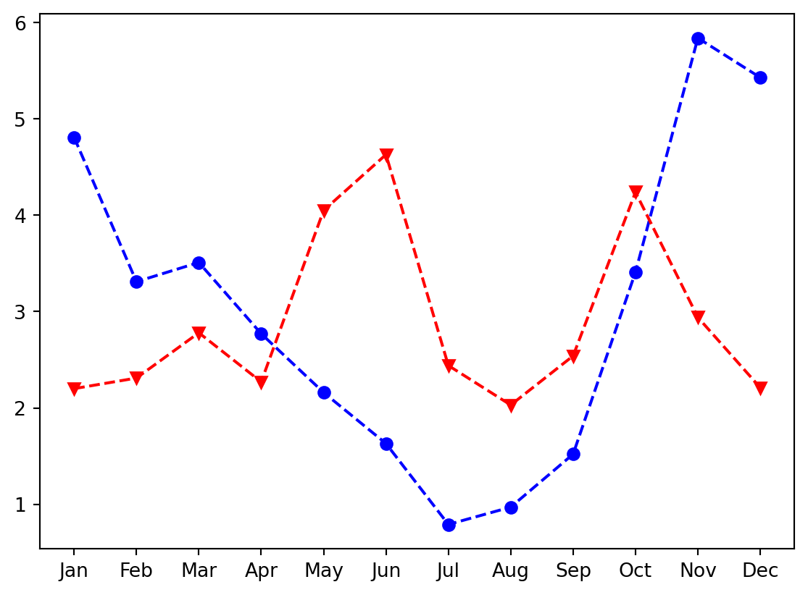
Customizing axis labels and adding titles
Customizing the axis labels requires using the set_xlabel and set_ylabel methods of the Axes object. Adding a title uses the set_title method.
In this exercise, you will customize the content of the axis labels and add a title to a plot.
As before, the data is already provided in pandas DataFrame objects loaded into memory: seattle_weather and austin_weather. These each have a “MONTH” column and a “MLY-PRCP-NORMAL” column. These data are plotted against each other in the first two lines of the sample code provided.
In addition, a Figure object named fig and an Axes object named ax have already been created for you.
Instructions
Use the set_xlabel method to add the label: “Time (months)”. - Use the set_ylabel method to add the label: “Precipitation (inches)”. - Use the set_title method to add the title: “Weather patterns in Austin and Seattle”.
fig,ax=plt.subplots()ax.plot(seattle_weather["MONTH"], seattle_weather["MLY-PRCP-NORMAL"])ax.plot(austin_weather["MONTH"], austin_weather["MLY-PRCP-NORMAL"])# Customize the x-axis labelax.set_xlabel("Time (months)")# Customize the y-axis labelax.set_ylabel("Precipitation (inches)")# Add the titleax.set_title("Weather patterns in Austin and Seattle")# Display the figureplt.show()
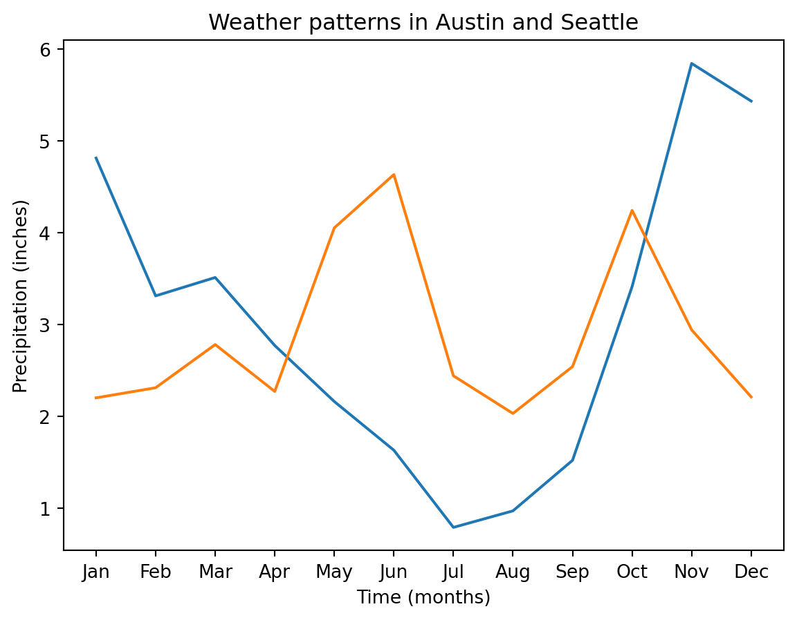
Creating small multiples with plt.subplots
Small multiples are used to plot several datasets side-by-side. In Matplotlib, small multiples can be created using the plt.subplots() function. The first argument is the number of rows in the array of Axes objects generate and the second argument is the number of columns. In this exercise, you will use the Austin and Seattle data to practice creating and populating an array of subplots.
The data is given to you in DataFrames: seattle_weather and austin_weather. These each have a “MONTH” column and “MLY-PRCP-NORMAL” (for average precipitation), as well as “MLY-TAVG-NORMAL” (for average temperature) columns. In this exercise, you will plot in a separate subplot the monthly average precipitation and average temperatures in each city. Instructions - Create a Figure and an array of subplots with 2 rows and 2 columns. - Addressing the top left Axes as index 0, 0, plot the Seattle precipitation. - In the top right (index 0,1), plot Seattle temperatures. - In the bottom left (1, 0) and bottom right (1, 1) plot Austin precipitations and temperatures.
# Create a Figure and an array of subplots with 2 rows and 2 columnsfig, ax = plt.subplots(2, 2)# Addressing the top left Axes as index 0, 0, plot month and Seattle precipitationax[0, 0].plot(seattle_weather['MONTH'], seattle_weather["MLY-PRCP-NORMAL"])# In the top right (index 0,1), plot month and Seattle temperaturesax[0, 1].plot(seattle_weather['MONTH'], seattle_weather["MLY-TAVG-NORMAL"])# In the bottom left (1, 0) plot month and Austin precipitationsax[1,0].plot(austin_weather['MONTH'], austin_weather["MLY-PRCP-NORMAL"])# In the bottom right (1, 1) plot month and Austin temperaturesax[1,1].plot(austin_weather['MONTH'], austin_weather["MLY-TAVG-NORMAL"])plt.show()
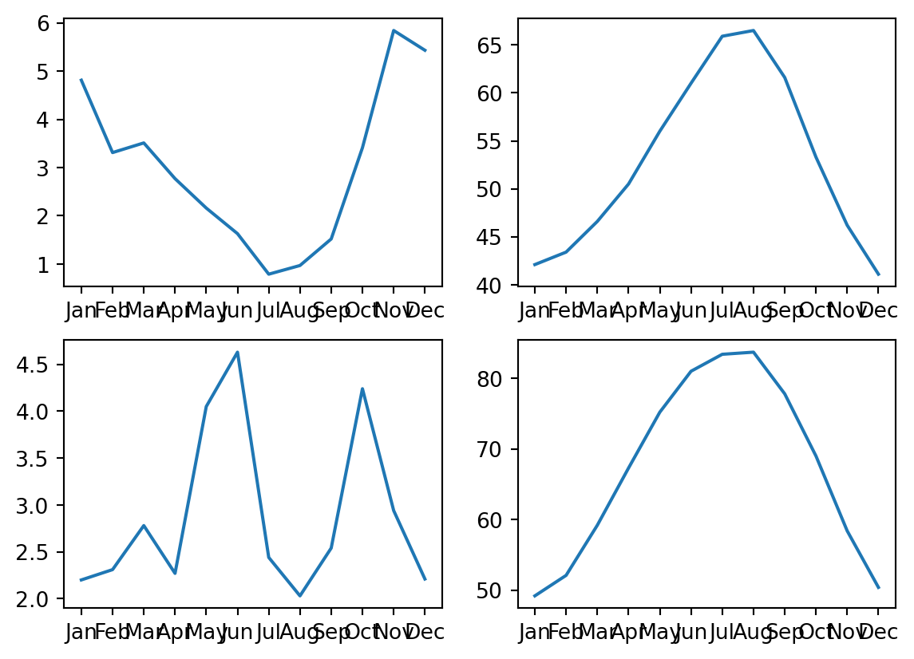
Small multiples with shared y axis
When creating small multiples, it is often preferable to make sure that the different plots are displayed with the same scale used on the y-axis. This can be configured by setting the sharey key-word to True.
In this exercise, you will create a Figure with two Axes objects that share their y-axis. As before, the data is provided in seattle_weather and austin_weather DataFrames.
Instructions
Create a Figure with an array of two Axes objects that share their y-axis range. - Plot Seattle’s “MLY-PRCP-NORMAL” in a solid blue line in the top Axes. - Add Seattle’s “MLY-PRCP-25PCTL” and “MLY-PRCP-75PCTL” in dashed blue lines to the top Axes. - Plot Austin’s “MLY-PRCP-NORMAL” in a solid red line in the bottom Axes and the “MLY-PRCP-25PCTL” and “MLY-PRCP-75PCTL” in dashed red lines.
# Create a figure and an array of axes: 2 rows, 1 column with shared y axisfig, ax = plt.subplots(2, 1, sharey=True)# Plot Seattle precipitation data in the top axesax[0].plot(seattle_weather['MONTH'], seattle_weather["MLY-PRCP-NORMAL"], color ='b')ax[0].plot(seattle_weather['MONTH'], seattle_weather["MLY-PRCP-25PCTL"], color ='b', linestyle ='--')ax[0].plot(seattle_weather['MONTH'], seattle_weather["MLY-PRCP-75PCTL"], color ='b', linestyle ='--')# Plot Austin precipitation data in the bottom axesax[1].plot(austin_weather['MONTH'], austin_weather["MLY-PRCP-NORMAL"], color ='r')ax[1].plot(austin_weather['MONTH'], austin_weather["MLY-PRCP-25PCTL"], color ='r', linestyle ='--')ax[1].plot(austin_weather['MONTH'], austin_weather["MLY-PRCP-75PCTL"], color ='r', linestyle ='--')plt.show()
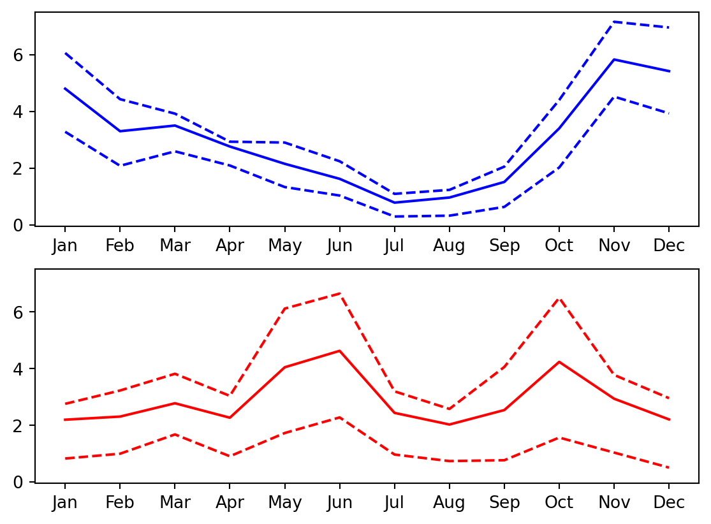
Read data with a time index
pandas DataFrame objects can have an index that denotes time. This is useful because Matplotlib recognizes that these measurements represent time and labels the values on the axis accordingly.
In this exercise, you will read data from a CSV file called climate_change.csv that contains measurements of CO2 levels and temperatures made on the 6th of every month from 1958 until 2016. You will use pandas’ read_csv function.
To designate the index as a DateTimeIndex, you will use the parse_dates and index_col key-word arguments both to parse this column as a variable that contains dates and also to designate it as the index for this DataFrame.
By the way, if you haven’t downloaded it already, check out the Matplotlib Cheat Sheet. It includes an overview of the most important concepts, functions and methods and might come in handy if you ever need a quick refresher!
Instructions
Import the pandas library as pd. - Read in the data from a CSV file called ‘climate_change.csv’ using pd.read_csv. - Use the parse_dates key-word argument to parse the “date” column as dates. - Use the index_col key-word argument to set the “date” column as the index.
# Import pandas as pdimport pandas as pd# Read the data from file using read_csvclimate_change = pd.read_csv("datasets/climate_change.csv", parse_dates=['date'], index_col="date")
Plot time-series data
To plot time-series data, we use the Axes object plot command. The first argument to this method are the values for the x-axis and the second argument are the values for the y-axis.
This exercise provides data stored in a DataFrame called climate_change. This variable has a time-index with the dates of measurements and two data columns: “co2” and “relative_temp”.
In this case, the index of the DataFrame would be used as the x-axis values and we will plot the values stored in the “relative_temp” column as the y-axis values. We will also properly label the x-axis and y-axis.
Instructions
Add the data from climate_change to the plot: use the DataFrame index for the x value and the “relative_temp” column for the y values. - Set the x-axis label to ‘Time’. - Set the y-axis label to ‘Relative temperature (Celsius)’. - Show the figure.
import matplotlib.pyplot as pltfig, ax = plt.subplots()# Add the time-series for "relative_temp" to the plotax.plot(climate_change.index,climate_change["relative_temp"])# Set the x-axis labelax.set_xlabel("Time")# Set the y-axis labelax.set_ylabel('Relative temperature (Celsius)')# Show the figureplt.show()
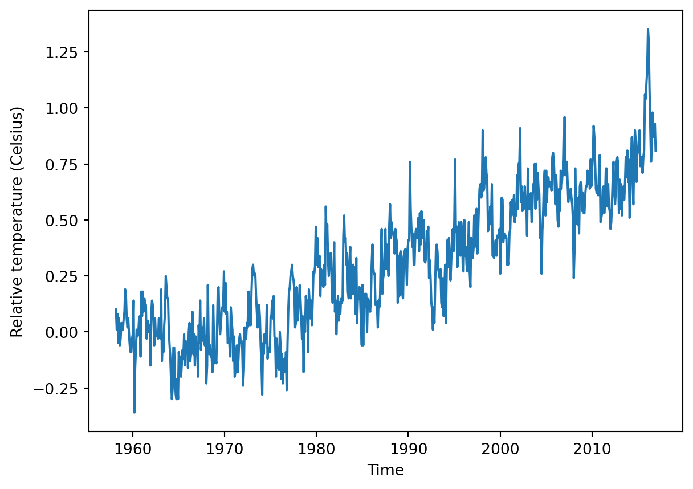
Using a time index to zoom in
When a time-series is represented with a time index, we can use this index for the x-axis when plotting. We can also select a range of dates to zoom in on a particular period within the time-series using pandas’ indexing facilities. In this exercise, you will select a portion of a time-series dataset and you will plot that period.
The data to use is stored in a DataFrame called climate_change, which has a time-index with dates of measurements and two data columns: “co2” and “relative_temp”.
Instructions
Use plt.subplots to create a Figure with one Axes called fig and ax, respectively. - Create a variable called seventies that includes all the data between “1970-01-01” and “1979-12-31”. - Add the data from seventies to the plot: use the DataFrame index for the x value and the “co2” column for the y values.
import matplotlib.pyplot as plt# Use plt.subplots to create fig and axfig, ax = plt.subplots()# Create variable seventies with data from "1970-01-01" to "1979-12-31"seventies = climate_change["1970-01-01" : "1979-12-31"]# Add the time-series for "co2" data from seventies to the plotax.plot(seventies.index, seventies["co2"])# Show the figureplt.show()
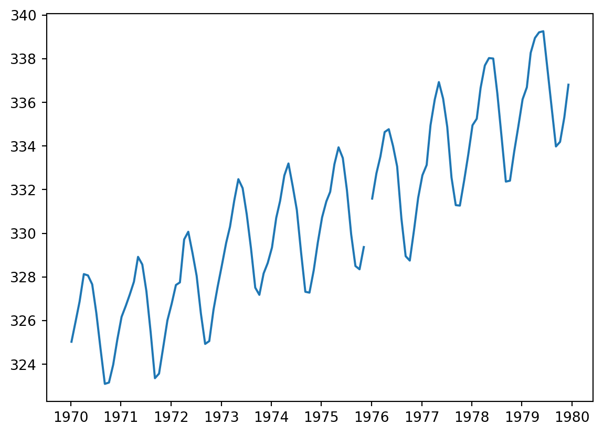
Plotting two variables
If you want to plot two time-series variables that were recorded at the same times, you can add both of them to the same subplot.
If the variables have very different scales, you’ll want to make sure that you plot them in different twin Axes objects. These objects can share one axis (for example, the time, or x-axis) while not sharing the other (the y-axis).
To create a twin Axes object that shares the x-axis, we use the twinx method.
In this exercise, you’ll have access to a DataFrame that has the climate_change data loaded into it. This DataFrame was loaded with the “date” column set as a DateTimeIndex, and it has a column called “co2” with carbon dioxide measurements and a column called “relative_temp” with temperature measurements.
Instructions
Use plt.subplots to create a Figure and Axes objects called fig and ax, respectively. - Plot the carbon dioxide variable in blue using the Axes plot method. - Use the Axes twinx method to create a twin Axes that shares the x-axis. - Plot the relative temperature variable in red on the twin Axes using its plot method.
import matplotlib.pyplot as plt# Initalize a Figure and Axesfig, ax = plt.subplots()# Plot the CO2 variable in blueax.plot(climate_change.index, climate_change['co2'], color='blue')# Create a twin Axes that shares the x-axisax2 = ax.twinx()# Plot the relative temperature in redax2.plot(climate_change.index, climate_change['relative_temp'], color='red')plt.show()
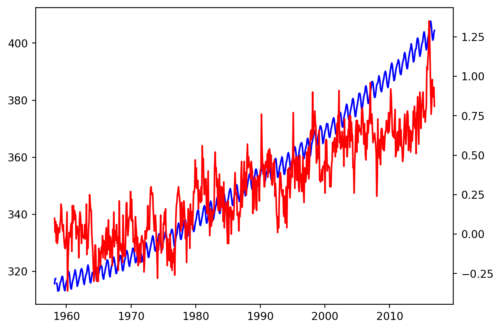
Defining a function that plots time-series data
Once you realize that a particular section of code that you have written is useful, it is a good idea to define a function that saves that section of code for you, rather than copying it to other parts of your program where you would like to use this code.
Here, we will define a function that takes inputs such as a time variable and some other variable and plots them as x and y inputs. Then, it sets the labels on the x- and y-axis and sets the colors of the y-axis label, the y-axis ticks and the tick labels.
Instructions
Define a function called plot_timeseries that takes as input an Axes object (axes), data (x,y), a string with the name of a color and strings for x- and y-axis labels. - Plot y as a function of in the color provided as the input color. - Set the x- and y-axis labels using the provided input xlabel and ylabel, setting the y-axis label color using color. - Set the y-axis tick parameters using the tick_params method of the Axes object, setting the colors key-word to color.
# Define a function called plot_timeseriesdef plot_timeseries(axes, x, y, color, xlabel, ylabel):# Plot the inputs x,y in the provided color axes.plot(x, y, color=color)# Set the x-axis label axes.set_xlabel(xlabel)# Set the y-axis label axes.set_ylabel(ylabel, color=color)# Set the colors tick params for y-axis axes.tick_params('y',colors=color)
Using a plotting function
Defining functions allows us to reuse the same code without having to repeat all of it. Programmers sometimes say “Don’t repeat yourself”.
In the previous exercise, you defined a function called plot_timeseries:
plot_timeseries(axes, x, y, color, xlabel, ylabel)
that takes an Axes object (as the argument axes), time-series data (as x and y arguments) the name of a color (as a string, provided as the color argument) and x-axis and y-axis labels (as xlabel and ylabel arguments). In this exercise, the function plot_timeseries is already defined and provided to you.
Use this function to plot the climate_change time-series data, provided as a pandas DataFrame object that has a DateTimeIndex with the dates of the measurements and co2 and relative_temp columns.
Instructions
In the provided ax object, use the function plot_timeseries to plot the “co2” column in blue, with the x-axis label “Time (years)” and y-axis label “CO2 levels”. - Use the ax.twinx method to add an Axes object to the figure that shares the x-axis with ax. - Use the function plot_timeseries to add the data in the “relative_temp” column in red to the twin Axes object, with the x-axis label “Time (years)” and y-axis label “Relative temperature (Celsius)”.
fig, ax = plt.subplots()# Plot the CO2 levels time-series in blueplot_timeseries(ax,climate_change.index, climate_change['co2'], "blue", 'Time (years)', 'CO2 levels')# Create a twin Axes object that shares the x-axisax2 = ax.twinx()# Plot the relative temperature data in redplot_timeseries(ax2, climate_change.index, climate_change["relative_temp"], "red", "Time (years)", "Relative temperature (Celsius)")plt.show()
Annotating a plot of time-series data
Annotating a plot allows us to highlight interesting information in the plot. For example, in describing the climate change dataset, we might want to point to the date at which the relative temperature first exceeded 1 degree Celsius.
For this, we will use the annotate method of the Axes object. In this exercise, you will have the DataFrame called climate_change loaded into memory. Using the Axes methods, plot only the relative temperature column as a function of dates, and annotate the data.
Instructions
Use the ax.plot method to plot the DataFrame index against the relative_temp column. - Use the annotate method to add the text ‘>1 degree’ in the location (pd.Timestamp(‘2015-10-06’), 1).
fig, ax = plt.subplots()# Plot the relative temperature dataax.plot(climate_change.index, climate_change.relative_temp)# Annotate the date at which temperatures exceeded 1 degreeax.annotate(">1 degree", xy=(pd.Timestamp("2015-10-06"),1))plt.show()
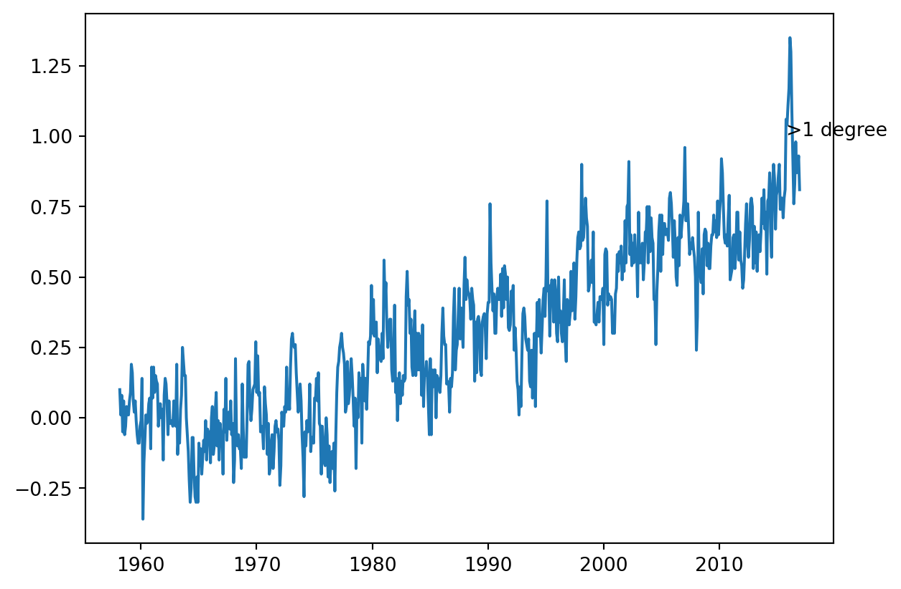
Plotting time-series: putting it all together
In this exercise, you will plot two time-series with different scales on the same Axes, and annotate the data from one of these series.
The CO2/temperatures data is provided as a DataFrame called climate_change. You should also use the function that we have defined before, called plot_timeseries, which takes an Axes object (as the axes argument) plots a time-series (provided as x and y arguments), sets the labels for the x-axis and y-axis and sets the color for the data, and for the y tick/axis labels:
plot_timeseries(axes, x, y, color, xlabel, ylabel)
Then, you will annotate with text an important time-point in the data: on 2015-10-06, when the temperature first rose to above 1 degree over the average.
Instructions
Use the plot_timeseries function to plot CO2 levels against time. Set xlabel to “Time (years)” ylabel to “CO2 levels” and color to ‘blue’. - Create ax2, as a twin of the first Axes. - In ax2, plot temperature against time, setting the color ylabel to “Relative temp (Celsius)” and color to ‘red’. - Annotate the data using the ax2.annotate method. Place the text “>1 degree” in x=pd.Timestamp(‘2008-10-06’), y=-0.2 pointing with a gray thin arrow to x=pd.Timestamp(‘2015-10-06’), y = 1.
fig, ax = plt.subplots()# Plot the CO2 levels time-series in blueplot_timeseries(ax, climate_change.index, climate_change['co2'], 'blue', "Time (years)", "CO2 levels")# Create an Axes object that shares the x-axisax2 = ax.twinx()# Plot the relative temperature data in redplot_timeseries(ax2, climate_change.index, climate_change['relative_temp'], 'red', "Time (years)", "Relative temp (Celsius)")# Annotate point with relative temperature >1 degreeax2.annotate(">1 degree", xy=(pd.Timestamp("2015-10-06"),1), xytext=(pd.Timestamp("2008-10-06"),-0.2), arrowprops={'arrowstyle': '->', 'color': 'gray'})plt.show()
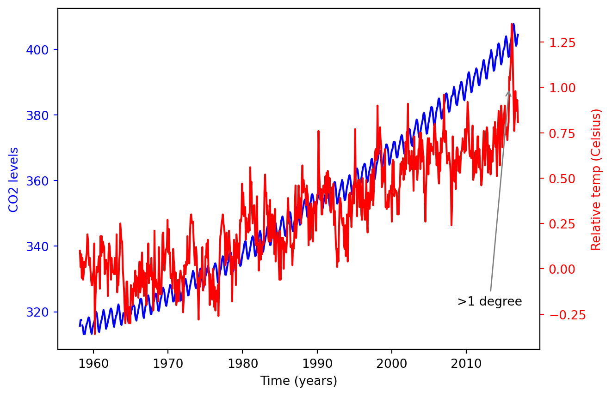
Bar chart
Bar charts visualize data that is organized according to categories as a series of bars, where the height of each bar represents the values of the data in this category.
For example, in this exercise, you will visualize the number of gold medals won by each country in the provided medals DataFrame. The DataFrame contains the countries as the index, and a column called “Gold” that contains the number of gold medals won by each country, according to their rows.
Instructions
Call the ax.bar method to plot the “Gold” column as a function of the country. - Use the ax.set_xticklabels to set the x-axis tick labels to be the country names. - In the call to ax.set_xticklabels rotate the x-axis tick labels by 90 degrees by using the rotation key-word argument. - Set the y-axis label to “Number of medals”.
fig, ax = plt.subplots()# Plot a bar-chart of gold medals as a function of countryax.bar(medals.index,medals['Gold'])# Set the x-axis tick labels to the country namesax.set_xticklabels(medals.index, rotation=90)# Set the y-axis labelax.set_ylabel("Number of medals")plt.show()
/var/folders/53/yp3kynfd7rn5y13c2wwfm33rmgtrfb/T/ipykernel_43537/1944855953.py:7: UserWarning: FixedFormatter should only be used together with FixedLocator
ax.set_xticklabels(medals.index, rotation=90)
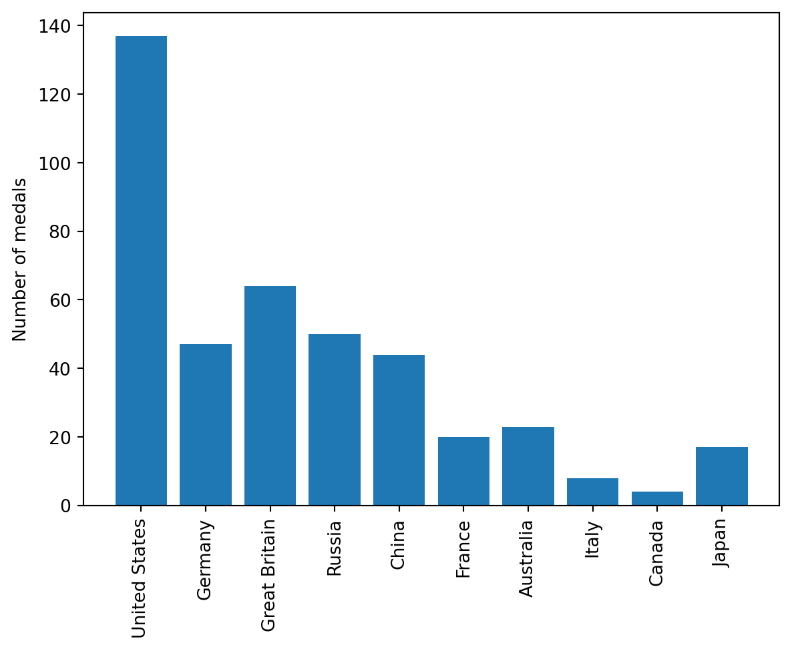
Stacked bar chart
A stacked bar chart contains bars, where the height of each bar represents values. In addition, stacked on top of the first variable may be another variable. The additional height of this bar represents the value of this variable. And you can add more bars on top of that.
In this exercise, you will have access to a DataFrame called medals that contains an index that holds the names of different countries, and three columns: “Gold”, “Silver” and “Bronze”. You will also have a Figure, fig, and Axes, ax, that you can add data to.
You will create a stacked bar chart that shows the number of gold, silver, and bronze medals won by each country, and you will add labels and create a legend that indicates which bars represent which medals.
Instructions
Call the ax.bar method to add the “Gold” medals. Call it with the label set to “Gold”. - Call the ax.bar method to stack “Silver” bars on top of that, using the bottom key-word argument so the bottom of the bars will be on top of the gold medal bars, and label to add the label “Silver”. - Use ax.bar to add “Bronze” bars on top of that, using the bottom key-word and label it as “Bronze”.
fig,ax=plt.subplots()# Add bars for "Gold" with the label "Gold"ax.bar(medals.index, medals.Gold, label="Gold")# Stack bars for "Silver" on top with label "Silver"ax.bar(medals.index, medals.Silver, bottom=medals.Gold, label="Silver")# Stack bars for "Bronze" on top of that with label "Bronze"ax.bar(medals.index, medals.Bronze, bottom=medals.Gold+medals.Silver, label="Bronze")# Display the legendax.legend()plt.show()
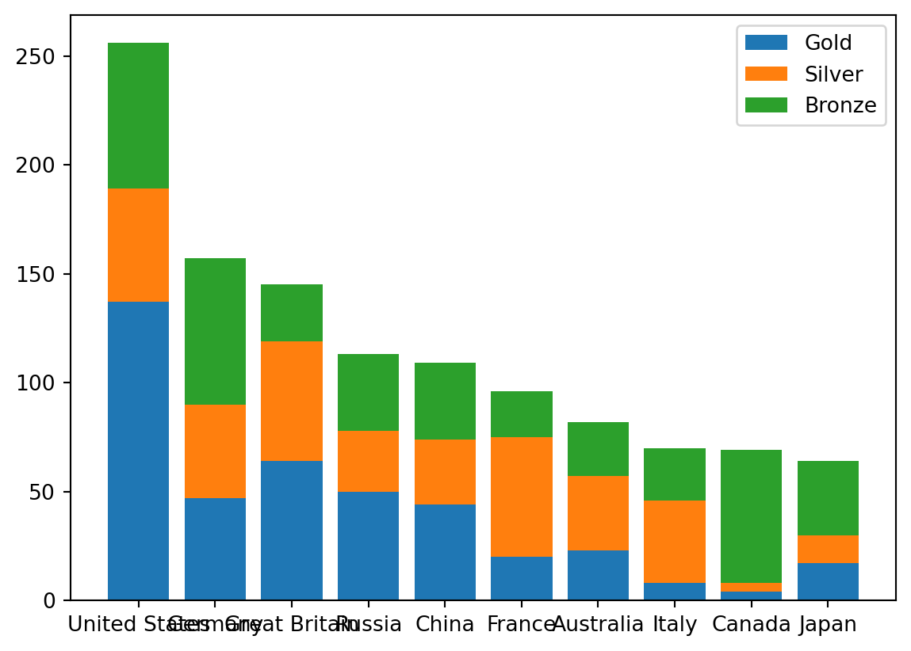
Creating histograms
Histograms show the full distribution of a variable. In this exercise, we will display the distribution of weights of medalists in gymnastics and in rowing in the 2016 Olympic games for a comparison between them.
You will have two DataFrames to use. The first is called mens_rowing and includes information about the medalists in the men’s rowing events. The other is called mens_gymnastics and includes information about medalists in all of the Gymnastics events.
Instructions
Use the ax.hist method to add a histogram of the “Weight” column from the mens_rowing DataFrame. - Use ax.hist to add a histogram of “Weight” for the mens_gymnastics DataFrame. - Set the x-axis label to “Weight (kg)” and the y-axis label to “# of observations”.
fig, ax = plt.subplots()# Plot a histogram of "Weight" for mens_rowingax.hist(mens_rowing.Weight)# Compare to histogram of "Weight" for mens_gymnasticsax.hist(mens_gymnastics.Weight)# Set the x-axis label to "Weight (kg)"ax.set_xlabel("Weight (kg)")# Set the y-axis label to "# of observations"ax.set_ylabel("# of observations")plt.show()
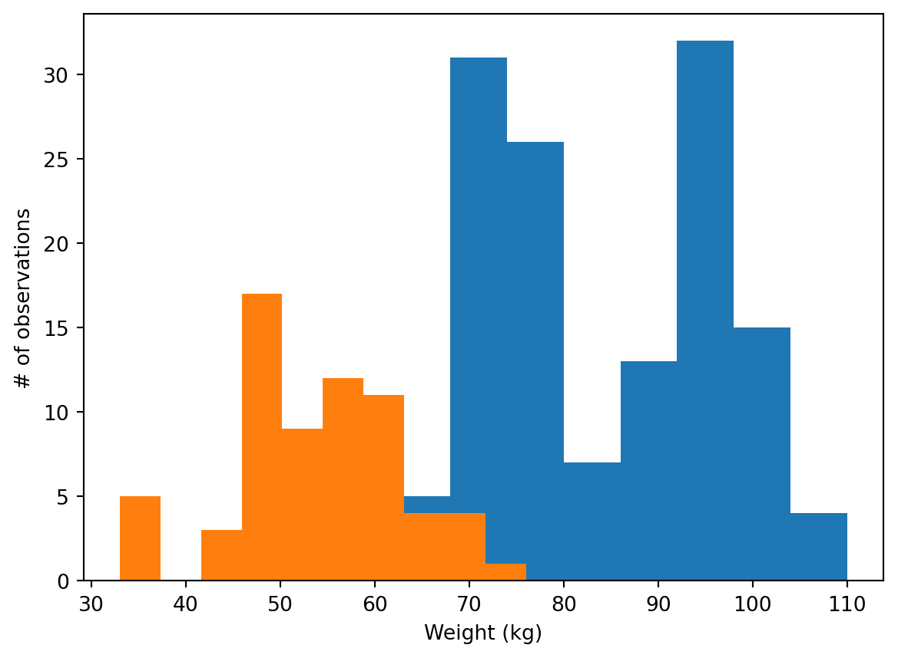
“Step” histogram
Histograms allow us to see the distributions of the data in different groups in our data. In this exercise, you will select groups from the Summer 2016 Olympic Games medalist dataset to compare the height of medalist athletes in two different sports.
The data is stored in a pandas DataFrame object called summer_2016_medals that has a column “Height”. In addition, you are provided a pandas GroupBy object that has been grouped by the sport.
In this exercise, you will visualize and label the histograms of two sports: “Gymnastics” and “Rowing” and see the marked difference between medalists in these two sports.
Instructions
Use the hist method to display a histogram of the “Weight” column from the mens_rowing DataFrame, label this as “Rowing”. - Use hist to display a histogram of the “Weight” column from the mens_gymnastics DataFrame, and label this as “Gymnastics”. - For both histograms, use the histtype argument to visualize the data using the ‘step’ type and set the number of bins to use to 5. - Add a legend to the figure, before it is displayed.
fig, ax = plt.subplots()# Plot a histogram of "Weight" for mens_rowingax.hist(mens_rowing.Weight,label='Rowing',histtype='step',bins=5)# Compare to histogram of "Weight" for mens_gymnasticsax.hist(mens_gymnastics.Weight,label='Gymnastics',histtype='step',bins=5)ax.set_xlabel("Weight (kg)")ax.set_ylabel("# of observations")# Add the legend and show the Figureax.legend()plt.show()
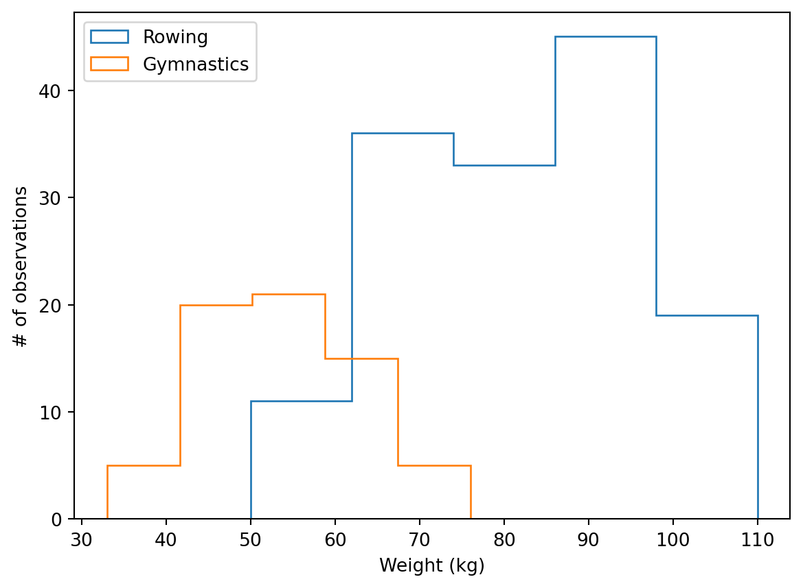
Adding error-bars to a bar chart
Statistical plotting techniques add quantitative information for comparisons into the visualization. For example, in this exercise, we will add error bars that quantify not only the difference in the means of the height of medalists in the 2016 Olympic Games, but also the standard deviation of each of these groups, as a way to assess whether the difference is substantial relative to the variability within each group.
For the purpose of this exercise, you will have two DataFrames: mens_rowing holds data about the medalists in the rowing events and mens_gymnastics will hold information about the medalists in the gymnastics events.
Instructions
Add a bar with size equal to the mean of the “Height” column in the mens_rowing DataFrame and an error-bar of its standard deviation. - Add another bar for the mean of the “Height” column in mens_gymnastics with an error-bar of its standard deviation. - Add a label to the the y-axis: “Height (cm)”.
fig, ax = plt.subplots()# Add a bar for the rowing "Height" column mean/stdax.bar("Rowing", mens_rowing.Height.mean(), yerr=mens_rowing.Height.std())# Add a bar for the gymnastics "Height" column mean/stdax.bar("Gymnastics", mens_gymnastics.Height.mean(), yerr=mens_gymnastics.Height.std())# Label the y-axisax.set_ylabel("Height (cm)")plt.show()
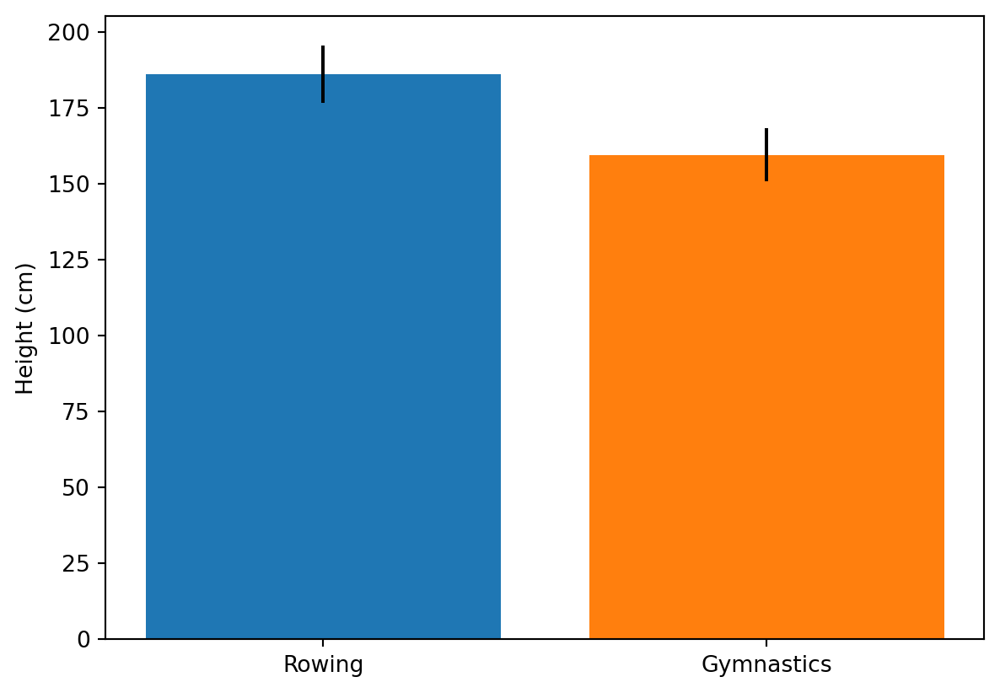
Adding error-bars to a plot
Adding error-bars to a plot is done by using the errorbar method of the Axes object.
Here, you have two DataFrames loaded: seattle_weather has data about the weather in Seattle and austin_weather has data about the weather in Austin. Each DataFrame has a column “MONTH” that has the names of the months, a column “MLY-TAVG-NORMAL” that has the average temperature in each month and a column “MLY-TAVG-STDDEV” that has the standard deviation of the temperatures across years.
In the exercise, you will plot the mean temperature across months and add the standard deviation at each point as y errorbars.
Instructions
Use the ax.errorbar method to add the Seattle data: the “MONTH” column as x values, the “MLY-TAVG-NORMAL” as y values and “MLY-TAVG-STDDEV” as yerr values. Add the Austin data: the “MONTH” column as x values, the “MLY-TAVG-NORMAL” as y values and “MLY-TAVG-STDDEV” as yerr values. Set the y-axis label as “Temperature (Fahrenheit)”.
Boxplots provide additional information about the distribution of the data that they represent. They tell us what the median of the distribution is, what the inter-quartile range is and also what the expected range of approximately 99% of the data should be. Outliers beyond this range are particularly highlighted.
In this exercise, you will use the data about medalist heights that you previously visualized as histograms, and as bar charts with error bars, and you will visualize it as boxplots.
Again, you will have the mens_rowing and mens_gymnastics DataFrames available to you, and both of these DataFrames have columns called “Height” that you will compare.
Instructions
Create a boxplot that contains the “Height” column for mens_rowing on the left and mens_gymnastics on the right. - Add x-axis tick labels: “Rowing” and “Gymnastics”. - Add a y-axis label: “Height (cm)”.
Scatter are a bi-variate visualization technique. They plot each record in the data as a point. The location of each point is determined by the value of two variables: the first variable determines the distance along the x-axis and the second variable determines the height along the y-axis.
In this exercise, you will create a scatter plot of the climate_change data. This DataFrame, which is already loaded, has a column “co2” that indicates the measurements of carbon dioxide every month and another column, “relative_temp” that indicates the temperature measured at the same time.
Instructions
Using the ax.scatter method, add the data to the plot: “co2” on the x-axis and “relative_temp” on the y-axis. - Set the x-axis label to “CO2 (ppm)”. - Set the y-axis label to “Relative temperature (C)”.
fig, ax = plt.subplots()# Add data: "co2" on x-axis, "relative_temp" on y-axisax.scatter(climate_change.co2,climate_change.relative_temp)# Set the x-axis label to "CO2 (ppm)"ax.set_xlabel("CO2 (ppm)")# Set the y-axis label to "Relative temperature (C)"ax.set_ylabel("Relative temperature (C)")plt.show()
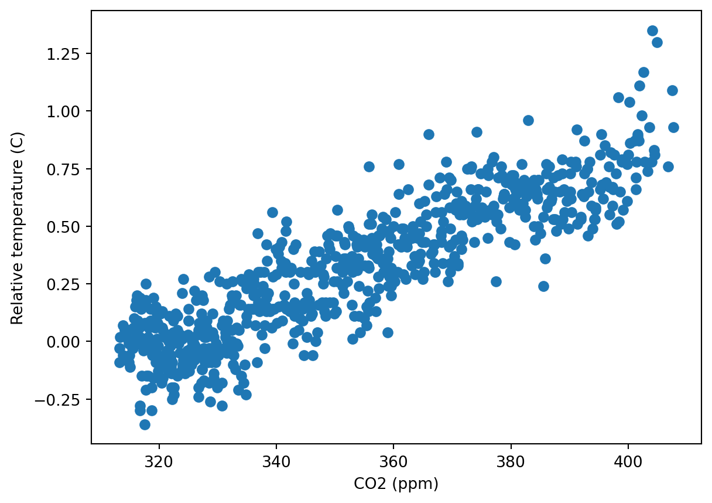
Encoding time by color
The screen only has two dimensions, but we can encode another dimension in the scatter plot using color. Here, we will visualize the climate_change dataset, plotting a scatter plot of the “co2” column, on the x-axis, against the “relative_temp” column, on the y-axis. We will encode time using the color dimension, with earlier times appearing as darker shades of blue and later times appearing as brighter shades of yellow.
Instructions
Using the ax.scatter method add a scatter plot of the “co2” column (x-axis) against the “relative_temp” column. - Use the c key-word argument to pass in the index of the DataFrame as input to color each point according to its date. - Set the x-axis label to “CO2 (ppm)” and the y-axis label to “Relative temperature (C)”.
fig, ax = plt.subplots()# Add data: "co2" on x-axis, "relative_temp" on y-axisax.scatter(climate_change.co2,climate_change.relative_temp,c =climate_change.index)# Set the x-axis label to "CO2 (ppm)"ax.set_xlabel("CO2 (ppm)")# Set the y-axis label to "Relative temperature (C)"ax.set_ylabel("Relative temperature (C)")plt.show()
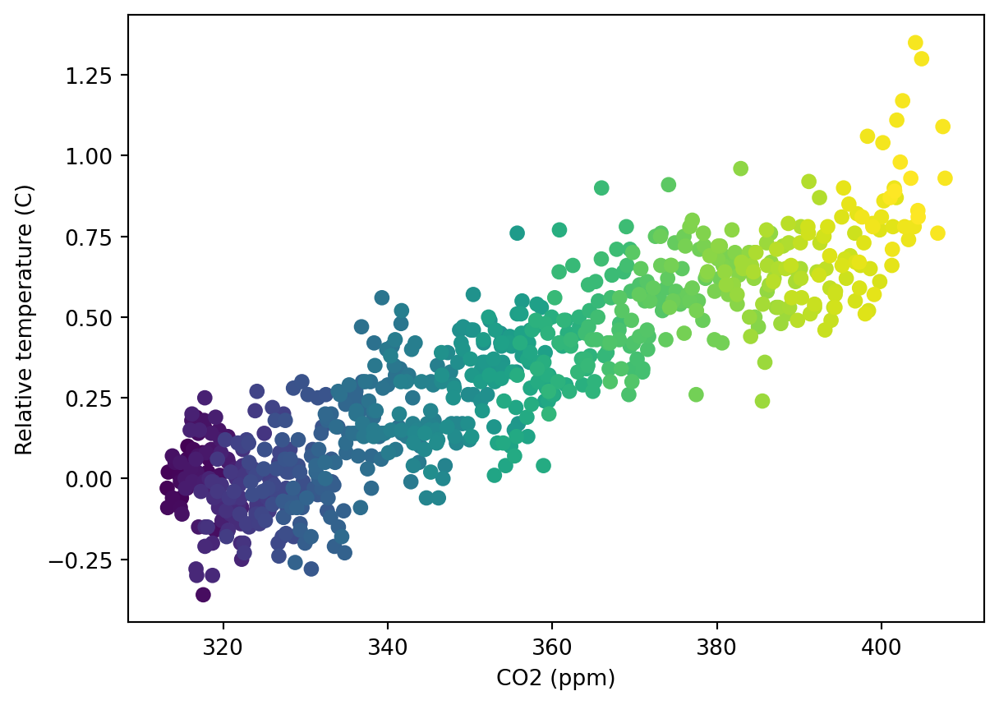
Switching between styles
Selecting a style to use affects all of the visualizations that are created after this style is selected.
Here, you will practice plotting data in two different styles. The data you will use is the same weather data we used in the first lesson: you will have available to you the DataFrame seattle_weather and the DataFrame austin_weather, both with records of the average temperature in every month.
Instructions
Select the ‘ggplot’ style, create a new Figure called fig, and a new Axes object called ax with plt.subplots. - Select the ‘Solarize_Light2’ style, create a new Figure called fig, and a new Axes object called ax with plt.subplots.
# Use the "ggplot" style and create new Figure/Axesplt.style.use("ggplot")fig,ax = plt.subplots()ax.plot(seattle_weather["MONTH"], seattle_weather["MLY-TAVG-NORMAL"])plt.show()# Use the "Solarize_Light2" style and create new Figure/Axesplt.style.use("Solarize_Light2")fig,ax = plt.subplots()ax.plot(austin_weather["MONTH"], austin_weather["MLY-TAVG-NORMAL"])plt.show()
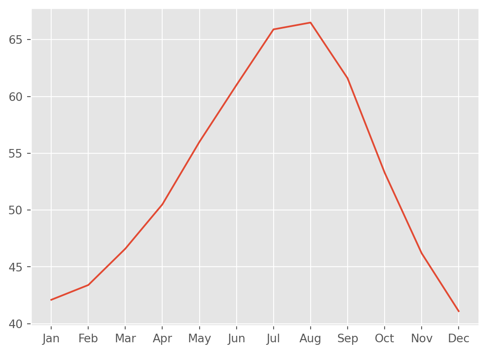
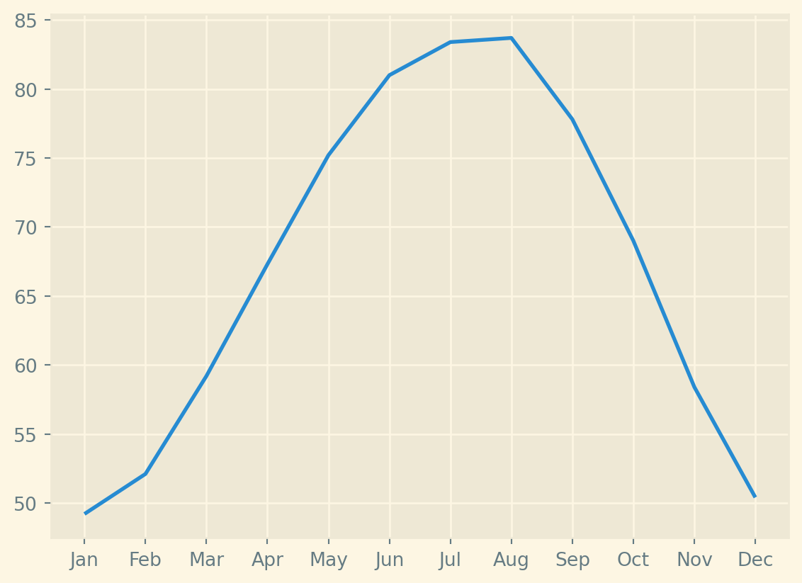
Saving a file several times
If you want to share your visualizations with others, you will need to save them into files. Matplotlib provides as way to do that, through the savefig method of the Figure object. In this exercise, you will save a figure several times. Each time setting the parameters to something slightly different. We have provided and already created Figure object.
Instructions
Examine the figure by calling the plt.show() function. - Save the figure into the file my_figure.png, using the default resolution. - Save the figure into the file my_figure_300dpi.png and set the resolution to 300 dpi.
# Set figure dimensions and save as a PNGplt.show()fig.set_size_inches([3,5])fig.savefig('figure_3_5.png')# Save as a PNG filefig.savefig('my_figure.png')# Save as a PNG file with 300 dpifig.savefig('my_figure_300dpi.png',dpi=300)
Save a figure with different sizes
Before saving your visualization, you might want to also set the size that the figure will have on the page. To do so, you can use the Figure object’s set_size_inches method. This method takes a sequence of two values. The first sets the width and the second sets the height of the figure.
Here, you will again have a Figure object called fig already provided (you can run plt.show if you want to see its contents). Use the Figure methods set_size_inches and savefig to change its size and save two different versions of this figure.
Instructions
Set the figure size as width of 3 inches and height of 5 inches and save it as ‘figure_3_5.png’ with default resolution. - Set the figure size to width of 5 inches and height of 3 inches and save it as ‘figure_5_3.png’ with default settings.
# Set figure dimensions and save as a PNGfig.set_size_inches([3,5])fig.savefig('figure_3_5.png')# Set figure dimensions and save as a PNGfig.set_size_inches([5,3])fig.savefig('figure_5_3.png')
Unique values of a column
One of the main strengths of Matplotlib is that it can be automated to adapt to the data that it receives as input. For example, if you receive data that has an unknown number of categories, you can still create a bar plot that has bars for each category.
In this exercise and the next, you will be visualizing the weight of athletes in the 2016 summer Olympic Games again, from a dataset that has some unknown number of branches of sports in it. This will be loaded into memory as a pandas DataFrame object called summer_2016_medals, which has a column called “Sport” that tells you to which branch of sport each row corresponds. There is also a “Weight” column that tells you the weight of each athlete.
In this exercise, we will extract the unique values of the “Sport” column
Instructions
Create a variable called sports_column that holds the data from the “Sport” column of the DataFrame object. - Use the unique method of this variable to find all the unique different sports that are present in this data, and assign these values into a new variable called sports. - Print the sports variable to the console.
# Extract the "Sport" columnsports_column = summer_2016['Sport']# Find the unique values of the "Sport" columnsports = sports_column.unique()# Print out the unique sports valuesprint(sports)
One of the main strengths of Matplotlib is that it can be automated to adapt to the data that it receives as input. For example, if you receive data that has an unknown number of categories, you can still create a bar plot that has bars for each category.
This is what you will do in this exercise. You will be visualizing data about medal winners in the 2016 summer Olympic Games again, but this time you will have a dataset that has some unknown number of branches of sports in it. This will be loaded into memory as a pandas DataFrame object called summer_2016_medals, which has a column called “Sport” that tells you to which branch of sport each row corresponds. There is also a “Weight” column that tells you the weight of each athlete. Instructions - Iterate over the values of sports setting sport as your loop variable. - In each iteration, extract the rows where the “Sport” column is equal to sport. - Add a bar to the provided ax object, labeled with the sport name, with the mean of the “Weight” column as its height, and the standard deviation as a y-axis error bar. - Save the figure into the file “sports_weights.png”.
fig, ax = plt.subplots()# Loop over the different sports branchesfor sport in sports:# Extract the rows only for this sport sport_df = summer_2016[summer_2016.Sport==sport]# Add a bar for the "Weight" mean with std y error bar ax.bar(sport,sport_df.Weight.mean(),yerr=sport_df.Weight.std())ax.set_ylabel("Weight")ax.set_xticklabels(sports, rotation=90)# Save the figure to filefig.savefig("sports_weights.png")
/var/folders/53/yp3kynfd7rn5y13c2wwfm33rmgtrfb/T/ipykernel_43537/4221101768.py:11: UserWarning: FixedFormatter should only be used together with FixedLocator
ax.set_xticklabels(sports, rotation=90)